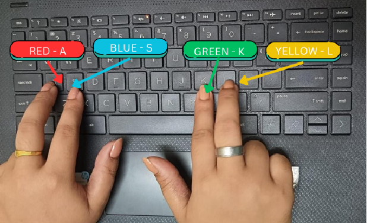

<!DOCTYPE html>
<html>
    <head>
        <title>Stroop Task Experiment</title>
        <meta charset="UTF-8">
        <script src="https://unpkg.com/jspsych@7.3.3"></script>
        <script src="https://unpkg.com/@jspsych/plugin-html-keyboard-response@1.1.2"></script>
        <link href="https://unpkg.com/jspsych@7.3.3/css/jspsych.css" rel="stylesheet" type="text/css" />
        <link rel="stylesheet" href="STROOP_VIGYANOTSAV/stroop.css">
        <script src="https://unpkg.com/@jspsych/plugin-fullscreen@1.2.0"></script>
        <script src="https://unpkg.com/@jspsych/plugin-preload@1.1.2"></script>
        <script src="https://unpkg.com/@jspsych/plugin-instructions@1.1.3"></script>
        <!-- <link href="https://unpkg.com/jspsych@7.0.0/css/jspsych.css" rel="stylesheet" type="text/css"> -->
        <style>body{background-color: lightgray;}</style>        
    </head>
    <body></body>
    <script>
      var jsPsych = initJsPsych({
        experiment_width: 700,
        // default_iti: 500,
        on_finish: function() {
              jsPsych.data.getData('csv');
          }
      });
    var timeline = [];
    var enter_fullscreen = {
      message: 'The experiment will switch to full screen mode.',
      type: jsPsychFullscreen,
      fullscreen_mode: true
    };
    timeline.push(enter_fullscreen);
    var welcome = {
        type: jsPsychInstructions,
        pages: ["<p>Welcome to the experiment!",`<p>In this experiment, a colour name will appear in the center of the screen which will be displayed in a coloured ink.</p>
        <p>When the word appears, press a key as instructed to indicate the <b> COLOUR OF THE INK</b> in which the word is printed <b>as accurately and quickly as you can.</b></p>
        <p>For example, If the name is <b style="color: blue">GREEN</b>, the correct answer would be BLUE.</p>`,`
        
        <p>Press the following keys for indicating the COLOUR OF THE INK in which the word is printed.</p>
        <p>Put your fingers as demonstrated and press <b>as accurately and quickly as you can.</b></p>
        `],
        // button_label_next: "Continue",
        // button_label_previous: "Previous",
        show_clickable_nav: true
      };
      timeline.push(welcome);
      

    //variables    
    var prac_var = [{ color: "blue", text: "BLUE", stim_type: "congruent", correct_response: "s"},
      { color: "red", text: "RED", stim_type: "congruent", correct_response: "a"},
      { color: "yellow", text: "YELLOW", stim_type: "congruent", correct_response: "l"},
      { color: "green", text: "GREEN", stim_type: "congruent", correct_response: "k"},
      { color: "blue", text: "BLUE", stim_type: "congruent", correct_response: "s"},
      { color: "red", text: "RED", stim_type: "congruent", correct_response: "a"},
      { color: "yellow", text: "YELLOW", stim_type: "congruent", correct_response: "l"},
      { color: "green", text: "GREEN", stim_type: "congruent", correct_response: "k"},
      { color: "blue", text: "YELLOW", stim_type: "incongruent", correct_response: "s"},
      { color: "blue", text: "GREEN", stim_type: "incongruent", correct_response: "s"},
      { color: "red", text: "YELLOW", stim_type: "incongruent", correct_response: "a"},
      { color: "red", text: "BLUE", stim_type: "incongruent", correct_response: "a"},
      { color: "yellow", text: "GREEN", stim_type: "incongruent", correct_response: "l"},
      { color: "yellow", text: "RED", stim_type: "incongruent", correct_response: "l"},
      { color: "green", text: "RED", stim_type: "incongruent", correct_response: "k"},
      { color: "green", text: "BLUE", stim_type: "incongruent", correct_response: "k"}];
    var variables = [
        { color: "blue", text: "BLUE", stim_type: "congruent", correct_response: "s"},
        { color: "blue", text: "BLUE", stim_type: "congruent", correct_response: "s"},
        { color: "blue", text: "BLUE", stim_type: "congruent", correct_response: "s"},
        { color: "blue", text: "YELLOW", stim_type: "incongruent", correct_response: "s"},
        { color: "blue", text: "GREEN", stim_type: "incongruent", correct_response: "s"},
        { color: "blue", text: "RED", stim_type: "incongruent", correct_response: "s"},
        { color: "red", text: "RED", stim_type: "congruent", correct_response: "a"},
        { color: "red", text: "RED", stim_type: "congruent", correct_response: "a"},
        { color: "red", text: "RED", stim_type: "congruent", correct_response: "a"},
        { color: "red", text: "GREEN", stim_type: "incongruent", correct_response: "a"},
        { color: "red", text: "YELLOW", stim_type: "incongruent", correct_response: "a"},
        { color: "red", text: "BLUE", stim_type: "incongruent", correct_response: "a"},
        { color: "yellow", text: "YELLOW", stim_type: "congruent", correct_response: "l"},
        { color: "yellow", text: "YELLOW", stim_type: "congruent", correct_response: "l"},
        { color: "yellow", text: "YELLOW", stim_type: "congruent", correct_response: "l"},
        { color: "yellow", text: "BLUE", stim_type: "incongruent", correct_response: "l"},
        { color: "yellow", text: "GREEN", stim_type: "incongruent", correct_response: "l"},
        { color: "yellow", text: "RED", stim_type: "incongruent", correct_response: "l"},
        { color: "green", text: "GREEN", stim_type: "congruent", correct_response: "k"},
        { color: "green", text: "GREEN", stim_type: "congruent", correct_response: "k"},
        { color: "green", text: "GREEN", stim_type: "congruent", correct_response: "k"},
        { color: "green", text: "RED", stim_type: "incongruent", correct_response: "k"},
        { color: "green", text: "BLUE", stim_type: "incongruent", correct_response: "k"},
        { color: "green", text: "YELLOW", stim_type: "incongruent", correct_response: "k"}];
        
    //fixation
    
    var fixation = {
        type: jsPsychHtmlKeyboardResponse,
        stimulus: '<p style="font-size:10vh;">+</p>',
        choices: 'NO_KEYS',
        trial_duration: 500,
               data: {
                  task: 'fixation',
                },
            };
    
    //trial
    var trial = {
        type: jsPsychHtmlKeyboardResponse,
        stimulus: function(){var stim = `<p style="font-size: 10vh; color:${jsPsych.timelineVariable('color')}">${jsPsych.timelineVariable('text')}</p>`;
                    return stim;},
        choices: ["a", "s", "k", "l"],
        data: {
        task: 'response',
        color: jsPsych.timelineVariable('color'),
        text: jsPsych.timelineVariable('text'),
        stim_type: jsPsych.timelineVariable('stim_type'),
        correct_response: jsPsych.timelineVariable('correct_response'),
        },
        on_finish: function(data){
        data.accuracy = jsPsych.pluginAPI.compareKeys(data.response, data.correct_response);
        } 
      };
    //PRACTICE 
    //feedback for practice
    var feedback = {
          data:{
            task: "feedback"
          },
          type: jsPsychHtmlKeyboardResponse,
          stimulus: function(){
            var last_trial_acc= jsPsych.data.get().last(1).values()[0].accuracy;
            if (last_trial_acc==1){
              return ''
            }
            else{
              return ''
            }
          },
          trial_duration: 800
        };
    // practice test series
    var prac_test = {
        timeline: [fixation, trial, feedback],
        timeline_variables: prac_var,
        randomize_order: true,
        repetitions: 2,
        data:{
          type: 'practice'
        }
        };
    timeline.push(prac_test);
    //breaks
    var break1 = {
      stimulus: '<p>Practice is over.</p><p> Please rest for a minute.</p>',
      type: jsPsychHtmlKeyboardResponse,
      trial_duration: 60000,
      }
      timeline.push(break1);
    var break2 = {
      type: jsPsychHtmlKeyboardResponse,
      stimulus: '<p>We will now begin with the experiment.</p><p> Press any key to continue from here.</p>',
      }
      timeline.push(break2);
    //main experiment
    var main_test = {
        timeline: [fixation, trial],
        timeline_variables: variables,
        randomize_order: true,
        repetitions: 3,
        data:{
          type: 'main'
        }
        };
      timeline.push(main_test);
    //result display
    var display_thanks={
      type: jsPsychHtmlKeyboardResponse,
      stimulus: function()
      {
        var trials = jsPsych.data.get().filter({ task: 'response', type: 'main'});
        var correct_trials = trials.filter({accuracy: true});
        var acc = Math.round(correct_trials.count() / trials.count() * 100);
        var rt = Math.round(correct_trials.select('rt').mean());
        
        var cong = jsPsych.data.get().filter({ task: 'response', type: 'main', stim_type: 'congruent'});
        var correct_cong = cong.filter({accuracy: true});
        var acc_cong = Math.round(correct_cong.count() / cong.count() * 100);
        var rt_cong = Math.round(correct_cong.select('rt').mean());
        
        var incong = jsPsych.data.get().filter({ task: 'response', type: 'main', stim_type: 'incongruent'});
        var correct_incong = incong.filter({accuracy: true});
        var acc_incong = Math.round(correct_incong.count() / incong.count() * 100);
        var rt_incong = Math.round(correct_incong.select('rt').mean());
        return `<p>You responded correctly on <b> ${acc}% </b> of the trials. Your average response time was <b> ${rt}ms.</b></p>
        <p>For <b>congruent trials</b>, You responded correctly on <b> ${acc_cong}% </b> of the trials and your average response time was <b>${rt_cong}ms.</b></p>
        <p>For <b>incongruent trials</b>, You responded correctly on <b> ${acc_incong}% </b> of the trials and your average response time was <b>${rt_incong}ms.</b></p>
        <p>Thank you!!</p>`
      }};
    timeline.push(display_thanks);
    
      
    jsPsych.run(timeline);
  
    </script>
    
</html>